Human speech, when analyzed in the frequency domain, reveals complicated, yet well understood features, which can be used to indentify the speaker. These features are derived from the mechanics of speech generation, which we shall introduce briefly here. The treatment here will be greatly simplified, and the interested reader is encouraged to consult the references for a more complete introduction.
Speech begins with the generation of an airstream, usually by the lungs and diaphram.[1] - a process called initiation. This air then passes through the larynx (voicebox), where it is modulated by the glottis (vocal chords). This step is called phonation or voicing[2][3], and is responsible for the generation of pitch and tone. Finally, the modulated air is filtered by the mouth, nose, and throat - a process called articulation - and the resultant pressure wave excites the air.[4].
As a consequence of this physiology, we notice several characteristics of the frequency domain spectrum of speech. First of all, the oscillation of the glottis results in an underlying fundamental frequency and a series of harmonics at multiples of this fundamental[5]. This is shown in the figure below, where we have plotted a brief audio waveform for the phoneme 'ah' and its magnitude spectrum. The fundamental frequency (113 Hz) and its harmonics appear as spikes in the spectrum.
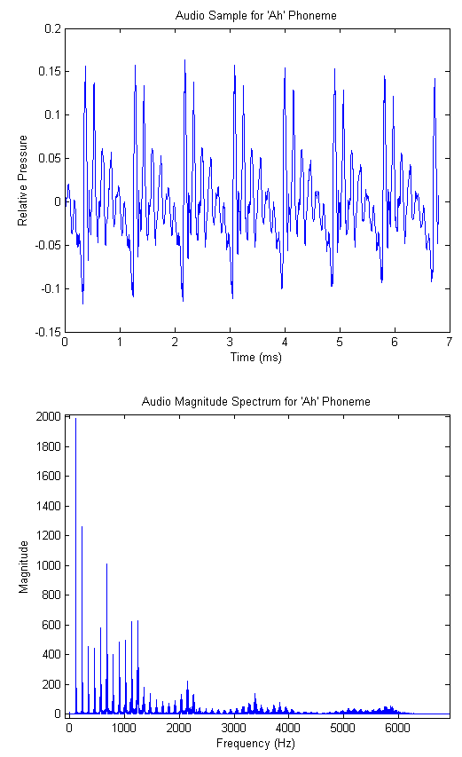
The location of the fundamental frequency is speaker dependent, and is a function of the dimensions and tension of the vocal chords. For adults it usually falls between 100 and 250 Hz, and females average significantly higher than males[5].
Further analysis of the audio spectrum shows that nearly all energy resides in the band between DC and 4kHz, and beyond 10kHz there is virtually no energy whatsoever. Incidentally, this is one of the primary motivations for the common sampling rate of 8kHz. In our case, we wanted higher fidelity audio, so we chose the (more than suitable) sampling rate of 32kHz.
Yet more detailed investigation shows that different phonemes (particularly vowels) have characteristic regions of high energy in the spectrum. These peak regions are called formants, and their locations can be used to extract both phoneme and (at a higher resolution) speaker information. The vowel formants are well studied and their particular locations are available for reference[6]. Considering again the 'ah' phoneme, the reference indicates that the first and second formants are centered at 700 Hz and 1150 Hz respectively. The audio spectrogram for our recorded 'ah' is shown in the figures below, where we have used a smaller FFT to de-emphasize the fundamental and its harmonics. (A spectrogram is simply a time series of FFTs taken on consecutive blocks of samples. We include both a surface and heatmap below). We see that there is significant energy in the predicted frequency bands.
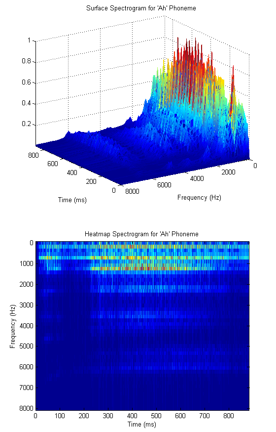
In order to quantify the amount of energy in the various regions of the spectrum, it would be natural to design a series of overlapping filters that cover the active region of the spectrum. It turns out that this technique is used quite often, and leads us to our primary analysis tool - the mel cepstrum. Consider the triangular filter bank shown below.
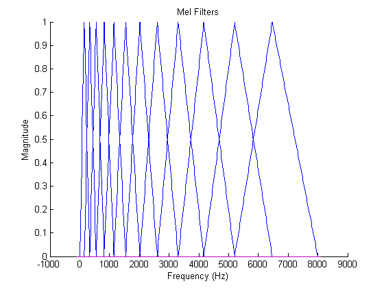
The filters are designed so as to be equally spaced in the mel domain, a logarithmic scale related to frequency by[7].
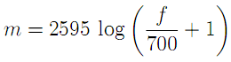
or inversely
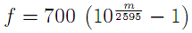
The mel scale mimics the logarithmic perception of pitch as experienced by humans, and is designed such that 0 and 1000 are equal to themselves in both the mel and frequency scale[7]. This is demonstrated in the plot below, which is simply a graphical representation of the formula above
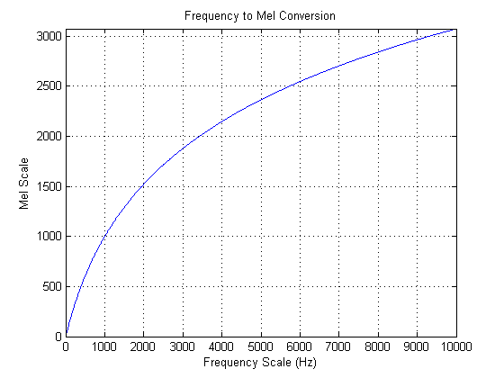
Once the mel filters have been designed, one can calculate a vector of mel weights for a brief audio sample as the inner product of the audio FFT and the mel filters. The number of mel filters to use is a system parameter, but the literature indicates that 12 is typically sufficient for speaker recognition. The last step that is taken is to compute the discrete cosine transform of the logarithm of the mel weight vector. The resulting vector is called the mel-frequency cepstrum (MFC), and the individual components are the mel-frequency cepstral coefficients (MFCCs)[8]. It is not completely clear to the authors why this last step is taken, but given that it is commonly used, we decided to implement it. The full process block diagram, then, is given below.
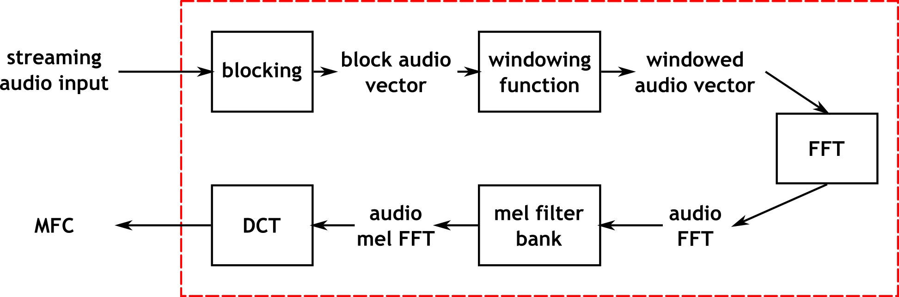
The windowing function referenced in the diagram is typically a Hamming or Hanning window, and is used to reduce smearing of peaks in the frequency domain. The improvement realized by introducing these windows was unclear to the authors, so we implemented them as parameters to the system which could either be used or left out.
Once the MFC has been calculated, the problem of classifying the speaker still remains. Fortunately, the problem is now formulated in the well studied language of machine learning, and the relevant techniques can be applied. Much of our work, then, was in training and evaluating various predictive models, which we will now briefly introduce.
The first (and perhaps simplest) classification method is nearest neighbor search. This technique attempts to classify a vector according to the identity of the nearest point in n-dimensional space, where n here refers to the length of the mel cepstum vector. In the more general case, the k nearest neighbors are found, and classification is based on the plurality winner of the k points. The distance metric used to evaluate nearness of points is typically chosen to be in the class of Lp norms, given by[9]
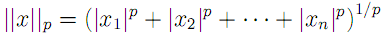
where we recognize the L2-norm to be the traditional Euclidean distance. As a caveat when performing nearest-neighbor search, one must be careful to normalize each dimension to prevent large magnitude dimensions from overwhelming smaller magnitude ones. Thus, it is common to compute z-scores for each vector component based on the mean and variance for each dimension.
The second primary technique that we used for cepstrum classification is the artificial neural network. The study of neural networks is very large and we will not attempt to introduce it here. Since we wished to run the network in real time, we decided to use one of the simplest neural network variants - the perceptron network. Such a network computes hidden layers of nodes by computing sums of weighted inputs, and then generates an output prediction based on a similar sum of weighted outputs from the hidden nodes. Consider the following canonical node.
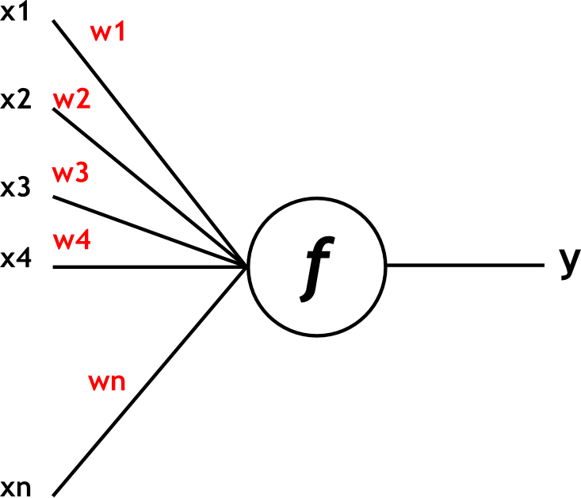
For the perceptron network, the output y is computed as
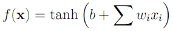
where the
x vector is the input,
b is the offset bias, and the
w vector represents input weights. The hyperbolic tangent, shown below, is used to "tame" outliers, which would otherwise lead to large outputs.
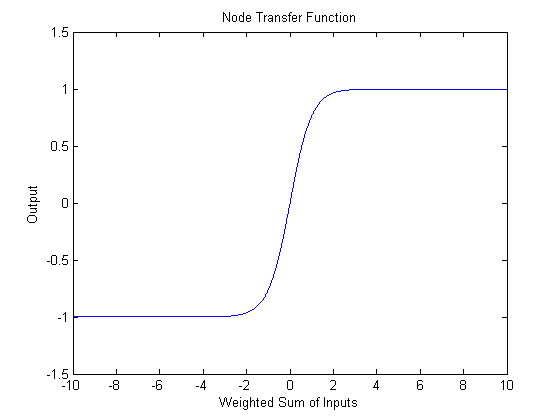